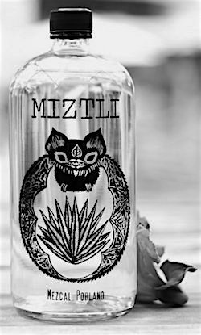
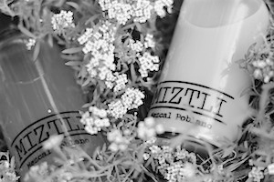

Bienvenidos
Somos una marca de mezcal que cree en el valor del producto desde su elaboración, hasta su distribución, en el comercio justo y en el diseño poblano.
Nuestros mezcales provienen de diferentes lugares del estado de Puebla, como Atlixco, Tepeaca, Huhuetlan y Tehuacán.
Actualmente contamos con 3 variades: agave azul, papalometl y espadín. Éste último ganó la medalla tercer lugar en el 4to Encuentro Nacional del mezcal en Morelia, compitiendo con 160 marcas diferentes de Oaxaca, Michoacan y Guerrero. Además contamos con cremas y licores para aquellos que buscan sabores diferentes pero sin perder el gusto por el mezcal.
Contacto